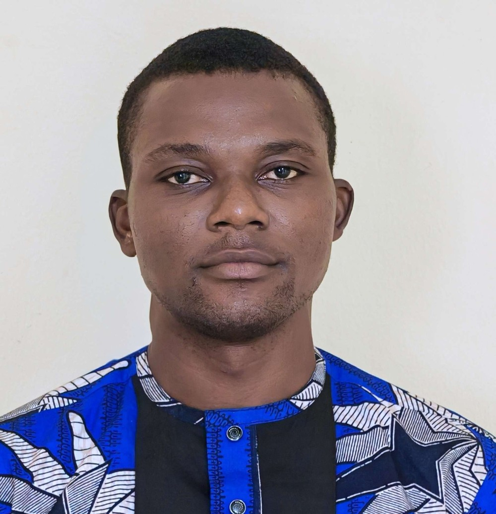

À proposAbout

Docteur (PhD) en Physiologie Cellulaire & Biologie Moléculaire, j'exerce depuis cinq ans au Laboratoire des Fièvres Hémorragiques et Virales (LFHV) de Cotonou (Ministère de la Santé, République du Bénin), laboratoire national de référence.Holder of a PhD in Cellular Physiology & Molecular Biology, I have worked for five years at the Hemorrhagic and Viral Fevers Laboratory (LFHV) of Cotonou (Ministry of Health, Republic of Benin), the national reference laboratory.
Mon activité s'articule autour de cinq volets complémentaires : le diagnostic moléculaire (contribution à plus de 100 000 analyses PCR : RT-PCR, RT-qPCR, PCR multiplex sur SARS-CoV-2, Lassa, Dengue, Mpox, Influenza et les virus des fièvres hémorragiques, dont Crimée-Congo, Ebola et Marburg), la génomique de terrain (plus de 500 génomes séquencés sur Nanopore et analysés en phylogénie pour la surveillance nationale avec Africa CDC et l'OMS), les données et biostatistiques (8 thèses de doctorat et plus de 10 mémoires de Master appuyés depuis 2019 ; études de 2 043 et 1 500+ patients sous R, Python et REDCap aux standards STROBE), la qualité et la conformité (ISO 15189:2022, procédures opératoires standard rédigées et POS réseau amendées avec l'appui de FHI 360), ainsi que la formation et l'enseignement supérieur (plus de 10 étudiants encadrés, cours en Licence et Master).My work spans five complementary areas: molecular diagnostics (contributed to 100,000+ PCR assays including RT-PCR, RT-qPCR and multiplex PCR on SARS-CoV-2, Lassa, Dengue, Mpox, Influenza and viral hemorrhagic fevers such as Crimean-Congo, Ebola and Marburg), field genomics (500+ genomes sequenced on Nanopore and analysed by phylogenetics for national surveillance with Africa CDC and WHO), data and biostatistics (8 PhD theses and 10+ Master dissertations supported since 2019; studies of 2,043 and 1,500+ patients using R, Python and REDCap under STROBE standards), quality and compliance (ISO 15189:2022, standard operating procedures authored and network SOPs amended with FHI 360 support), and higher-education teaching and training (10+ students supervised, Bachelor and Master courses).
Désigné formateur par le LFHV et FHI 360 (projet EpiC GHS Bénin) pour la mise en œuvre des modules opérationnels de formation pratique au diagnostic de laboratoire des maladies infectieuses et des fièvres hémorragiques et virales dans les deux laboratoires FHV du Nord-Bénin (octobre 2026). Disponible pour une prise de fonction immédiate.Designated trainer by LFHV and FHI 360 (EpiC GHS Benin project) to deliver operational hands-on training modules in laboratory diagnostics of infectious diseases and viral hemorrhagic fevers across the two VHF laboratories in northern Benin (October 2026). Available for immediate start.
Diagnostic moléculaireMolecular diagnostics
RT-PCR, RT-qPCR, PCR multiplex ; respect des délais de rendu en situation d'urgence épidémique ; intégration de nouveaux protocoles moléculaires en moins de 48 h.RT-PCR, RT-qPCR, multiplex PCR; turnaround deadlines met during epidemic emergencies; new molecular protocols integrated within 48 h.
Génomique de terrainField genomics
Séquençage Oxford Nanopore MinION, variant calling et analyse phylogénétique intégrés à la surveillance génomique nationale (Africa CDC / OMS).Oxford Nanopore MinION sequencing, variant calling and phylogenetic analysis integrated into national genomic surveillance (Africa CDC / WHO).
Données & biostatistiquesData & biostatistics
Études de 2 043 et 1 500+ patients ; R (tidyverse, gtsummary, pROC) et Python ; REDCap ; rapports conformes aux grilles STROBE ; cartographie QGIS.Studies of 2,043 and 1,500+ patients; R (tidyverse, gtsummary, pROC) and Python; REDCap; STROBE-compliant reporting; QGIS mapping.
Qualité & conformitéQuality & compliance
ISO 15189:2022 ; rédaction de POS internes et révision des POS du réseau Nord-Bénin (appui FHI 360) ; contrôles CIQ/EEQ sur cartes de Levey-Jennings ; préparation aux audits.ISO 15189:2022; internal SOP authoring and revision of northern-Benin network SOPs (FHI 360 support); IQC/EQA on Levey-Jennings charts; audit preparation.
Enseignement & formationTeaching & training
Cours et TP en Licence et Master (UNSTIM, FAST/UAC, IRGIB Africa, École Supérieure Le Faucon) ; formateur FHI 360 au LFHV de Parakou ; encadrement de 10+ étudiants ; 5 articles publiés dont 2 en premier auteur.Lectures and practicals at Bachelor and Master level (UNSTIM, FAST/UAC, IRGIB Africa, École Supérieure Le Faucon); FHI 360 trainer at LFHV Parakou; 10+ students supervised; 5 published papers including 2 as first author.
Éthique & rigueur méthodologiqueEthics & methodological rigour
Protocolisation préalable à la collecte, traçabilité complète des échantillons et des scripts d'analyse, anonymisation stricte des données cliniques et communication adaptée aux équipes techniques comme aux partenaires internationaux.Protocol writing prior to data collection, full sample and script traceability, strict anonymisation of clinical data and clear reporting for both technical teams and international partners.
Formation académiqueEducation
Doctorat (PhD) · 2022 - 2025PhD · 2022 - 2025
Physiologie Cellulaire & Biologie Moléculaire · UNSTIM, Abomey.
Thèse : épidémiologie moléculaire du SARS-CoV-2 à Cotonou (NGS, phylogénie, réponse immune).Cellular Physiology & Molecular Biology · UNSTIM, Abomey.
Thesis: molecular epidemiology of SARS-CoV-2 in Cotonou (NGS, phylogenetics, immune response).
Master · 2019 - 2021MSc · 2019 - 2021
Biologie Cellulaire & Immunologie · Faculté des Sciences et Techniques (FAST), Université d'Abomey-Calavi.Cell Biology & Immunology · Faculty of Sciences and Technology (FAST), University of Abomey-Calavi.
Licence · 2014 - 2017BSc · 2014 - 2017
Génie de Biologie Humaine (analyses biomédicales) · École Polytechnique d'Abomey-Calavi (EPAC), Université d'Abomey-Calavi.Human Biology Engineering (biomedical analyses) · Polytechnic School of Abomey-Calavi (EPAC), University of Abomey-Calavi.